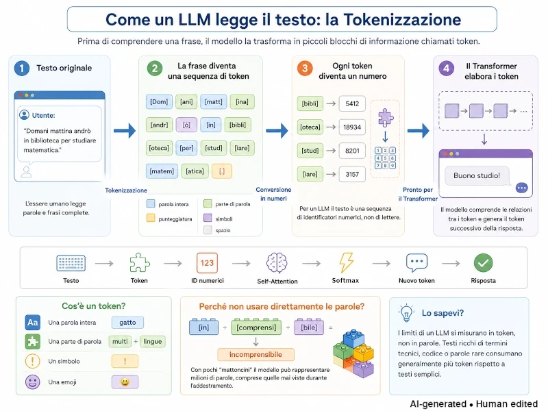
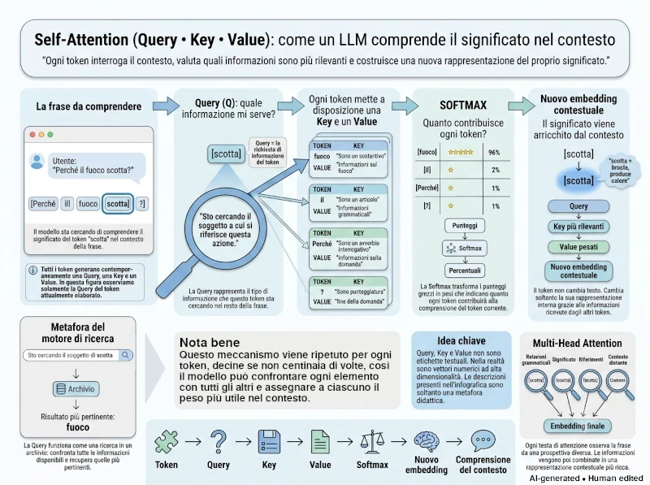
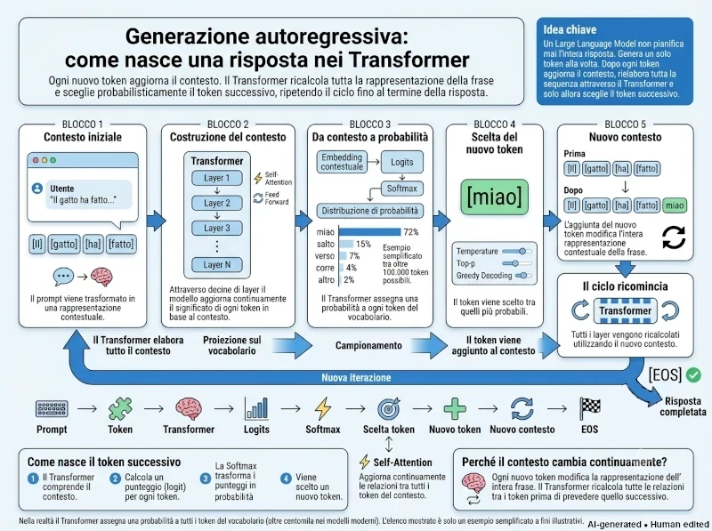

Cosa vedremo oggi
Nelle puntate precedenti abbiamo scoperto che ottenere buoni risultati con un modello linguistico dipende molto più dalla qualità delle domande che da fantomatiche formule magiche di prompt engineering.
A questo punto nasce però un dubbio inevitabile: che cosa succede realmente quando premiamo Invio?
In questa parte apriremo il cofano di un Transformer per osservare, senza formule matematiche, il percorso che trasforma una frase in una risposta.
Oggi vedremo:
- come un testo viene suddiviso in token;
- perché le parole diventano vettori numerici;
- come funziona il meccanismo di Self-Attention;
- perché un LLM non "conosce" la risposta, ma la costruisce parola dopo parola sulla base di probabilità.
Come leggere questa intervista
Le domande sono reali.
Le risposte nascono dal confronto tra ChatGPT, Claude e le AI integrate nei motori di ricerca Google e Brave, verificate con fonti tecniche e fuse in un'unica voce narrativa.
Nota sulle immagini
Tutti gli schemi e le illustrazioni presenti in questa serie sono stati progettati appositamente per accompagnare il testo. Le immagini sono generate con l'ausilio dell'Intelligenza Artificiale, tramite la sinergia tra l'assistente di Google per ottenere consigli su quali immagini generare, chatGPT per la creazione di un prompt ottimale da dare Gemini e, quando necessario, rifinite manualmente con software di grafica per migliorarne chiarezza e coerenza con i contenuti. Per questo motivo ogni immagine riporta il watermark AI generated • Human edited.
Token: la moneta dell'AI
Questi Token devono essere davvero importanti per quante volte me li hai nominati. Cosa sono i Token e inoltre cosa c'entra il tuo essere un modello Transformer? Cosa intendi quando dici che il Transformer da un peso ai Token e come tutto ciò influenza a livello probabilistico le risposte alle mie domande?
Se dovessi sintetizzare tutto in una frase, direi:
I token sono ciò con cui "vedo" il testo; il Transformer è il meccanismo con cui ne comprendo le relazioni.
Vediamolo con calma.
Cosa sono i token
Un token rappresenta il più piccolo pezzo di informazione che un LLM elabora. Contrariamente a quanto si potrebbe pensare, un token non corrisponde sempre a una parola intera. Non lavoro lettera per lettera né parola per parola: lavoro per pezzi che stanno nel mezzo. Per un computer il testo non esiste, esistono i numeri. A seconda della lingua e della rarità e complessità del termine, un token può essere:
-
Una parola intera (es. "gatto").
-
Una parte di una parola (es. "multilingue" può diventare "mult", "iling", "ue").
-
Un singolo carattere o simbolo di punteggiatura o emoji.
-
Uno spazio bianco.
Esempio pratico: La parola "incomprensibile" potrebbe diventare qualcosa come "in" + "comprensi" + "bile" — tre token invece di uno perché il modello li analizza come una sequenza di sottounità semantiche. Una parola inventata o un termine tecnico raro viene spezzettato ancora di più.
Questo processo di scomposizione si chiama tokenizzazione. Per l'inglese, una regola pratica comune è che 750 parole corrispondono a circa 1.000 token (rapporto 3:4), mentre in italiano il rapporto può variare a causa della maggiore complessità morfologica delle parole (fonte).
Sicuramente ti starai chiedendo: perché non
imparare direttamente le parole invece di effettuare questi
spezzettamenti?
. Perché le lingue sono enormi!
Se il vocabolario contenesse ogni possibile parola italiana, inglese, francese… sarebbe infinito. Senza contare tutte le parole inventate che un utente potrebbe fornirmi e tutti gli errori di battitura. È molto più efficiente imparare dei "mattoncini". Come i LEGO: con pochi pezzi puoi costruire tantissime parole.
Questo come si traduce nell'immediato per un utente:
-
I miei limiti si misurano in token, non in parole o caratteri.
Come già accennato prima, la mia finestra di contesto è un numero fisso di token. Testi con molti termini rari, codice, o lingue meno rappresentate nei dati di training consumano più token per la stessa quantità di significato.
-
Non "vedo" le lettere dentro un token come le vedresti tu.
Questo spiega comportamenti strani tipo difficoltà a contare le lettere in una parola, o a fare giochi di parole che richiedono manipolare singole lettere: se "fragola" è un token unico, io lo tratto come un blocco, non come sette lettere.
Il ruolo del Transformer
— Attention is all you need
Il Transformer è un'architettura di rete neurale inventata da Google nel 2017 — soverchiando il primato tenuto dai modelli Recurrent Neural Network (RNN), senza però mandarli davvero in pensione.
È il "cervello" che mi permette di capire le relazioni tra i token all'interno di una frase grazie a tre concetti chiave:
-
Meccanismo di Attenzione (Self-Attention)
Guardo l'intera frase nello stesso momento. Capisco il significato di una parola ambigua (es. "pesca") guardando i token vicini (es. "frutto" o "fiume").
-
Elaborazione parallela
Analizzo tutti i token contemporaneamente, non una parola dopo l'altra. Questo mi rende estremamente veloce e potente.
-
Vettorializzazione
Trasformo ogni token in una lista di centinaia di numeri (vettori). Questi numeri indicano la posizione della parola nello spazio geometrico del significato, permettendomi di calcolare la vicinanza concettuale tra due termini.
Questo meccanismo permette al modello di valutare dinamicamente quali token nella frase sono più rilevanti rispetto ad altri, indipendentemente dalla loro distanza nella sequenza.
Ad esempio:
Se all'inizio di una conversazione lunga mi dici
sto scrivendo per un pubblico di bambini di 8 anni, e poi venti righe dopo mi chiedi di spiegare la fotosintesi, il Transformer mi permette di "ricollegare" quella richiesta finale all'informazione data molto prima, dando più peso a quel dettaglio quando genero la risposta.

Come nascono i "pesi" nell'attenzione
Come ben saprai, una parola, da sola, ha poco significato o, meglio, può averne tanti.
Prendi il token di “blu”; potrebbe riferirsi a: il colore, una squadra, un partito politico, una marca, uno stato emotivo ("feeling blue"), il mare, il cielo. Il significato dipende completamente dal contesto. Come accade tra le persone infatti la parola blu assume una connotazione particolare se inserita nella frase
Perché il cielo è blu?. Qui entra in gioco il meccanismo dell'Attention.
Embedding (o incorporazione)
Prima di calcolare i pesi, devo trasformare gli indici dei token in posizioni geometrie. Ogni token è associato a un vettore di embedding (una lista di migliaia di numeri che ne definisce le coordinate). Questi numeri posizionano il token in uno spazio a tantissime dimensioni.
Token con significati simili (es. "gatto" e "cane") si troveranno vicini in questo spazio matematico. Viceversa, token con significati dissimili (es. "pizza" e "astronave") si troveranno lontani.
Aggiunta del Positional Encoding
Prima di passare all'analisi del token, bisogna assegnare un ordine di lettura. Questo perché altrimenti ci sarebbe solo confusione nel calcolo dei giusti pesi.
il cane morde l'uomoel'uomo morde il caneuserebbero esattamente gli stessi token, ma con significato opposto. Senza informazione sull'ordine, per il meccanismo di attenzione puro sarebbero indistinguibili perché questa tratta l'input come un insieme (un "bag of tokens"), non come una sequenza ordinata.
Per far ciò, a ogni vettore di embedding viene sommato un vettore che codifica la sua posizione nella sequenza. In questo modo il vettore finale contiene sia l'informazione semantica (parola) sia quella posizionale (ordine).
Self-Attention (chi deve ascoltare chi)
Immagina che ogni token sia una persona seduta a un tavolo. Ogni
persona deve decidere: Quanto devo ascoltare ciascuna delle altre
persone prima di parlare?
.
Ecco quindi che, per calcolare l'attenzione, ogni token genera tre vettori diversi a partire dal suo embedding, tramite tre trasformazioni matematiche (moltiplicazioni per matrici apprese durante l'addestramento):
-
Query (Q — La Domanda)
cosa sto cercando io, token attuale, per capire il contesto?
-
Key (K — L'Etichetta)
cosa offro io, token del passato, come informazione disponibile?
-
Value (V — Il Contenuto)
qual è il contenuto effettivo che porto, se vengo scelto come rilevante?
Ad esempio
Se il token attuale è "blu", la sua Query potrebbe essere:
Sto cercando il sostantivo che probabilmente descrivo.Ogni token precedente espone invece la propria Key, cioè l'informazione che lo descrive (ad esempio:Sono un sostantivo.,Sono un verbo.,Sono un luogo.), insieme al proprio Value, cioè il contenuto che potrà essere trasmesso se quel token verrà ritenuto rilevante. Il modello confronta quindi la Query di "blu" con tutte le Key disponibili e assegna un peso di attenzione a ciascun token. Possiamo immaginare la situazione così:
Token
Query
Key
Value
cielo
cosa sto cercando
sono un sostantivo
informazioni sul cielo
blu
sto cercando il mio referente
sono un aggettivo
informazioni sul colore
è
sto cercando il predicato
sono un verbo
informazioni verbali
Nota.
Naturalmente questo è solo un modello concettuale. Nella realtà Query, Key e Value sono vettori con centinaia o migliaia di componenti, non etichette testuali. Inoltre, ogni token genera sempre una propria Query, una Key e un Value: in questo esempio ci siamo concentrati sulla Query del token "blu", ma la tabella mostra anche quelle degli altri token per evidenziare che ciascuno partecipa al meccanismo di attenzione sia come "chi cerca" sia come "chi può essere ascoltato".
Il peso (o punteggio di attenzione) tra due token si calcola facendo il prodotto scalare tra la Query del token attuale e la Key di ogni token precedente. Più questo prodotto è alto, più i due vettori sono "allineati" nello spazio matematico, più quel token del passato è considerato rilevante per quello che sto per generare ora. (fonte)
È come misurare quanto due idee sono compatibili. Immagina questi punteggi:
blu → cielo = 9.3
blu → è = 1.2
blu → perché = 0.4
blu → ? = 0.1Già qui si vede qualcosa di importante: il token "blu" considera "cielo" molto più rilevante di tutti gli altri. Ma non abbiamo ancora dei pesi. Abbiamo solo dei punteggi.
Dal punteggio al peso reale — la funzione softmax
A questo punto abbiamo dei punteggi grezzi, ma non sono ancora "pesi" utilizzabili. Qui entra in gioco la funzione softmax, che trasforma questi punteggi in una distribuzione di probabilità in due passaggi:
-
Normalizzazione
Trasforma tutti i punteggi in valori positivi compresi tra 0 e 1;
-
Somma a 1
Fa in modo che la somma di tutti questi valori sia esattamente 1 (o 100%)
In pratica, la softmax prende i punteggi grezzi e li trasforma in una sorta di "percentuale di attenzione" che il token attuale assegna a ciascun token precedente.
Per esempio: 9.3, 1.2, 0.4 e 0.1 diventano 96%, 2%, 1% e 1%
Il risultato è che il token con l'affinità maggiore riceve un peso alto (es. 0.8), mentre quelli irrilevanti ricevono pesi vicini a zero (es. 0.01). Questo passaggio è fondamentale perché permette al modello di "decidere" su quali informazioni concentrarsi e quali ignorare in quel preciso istante.
Il Transformer non decide:
Guardo soltanto cielo.Dice invece
Guardo soprattutto cielo, un pochino il verbo e quasi per niente il resto.Questa gradualità è uno dei motivi della sua robustezza, che nulla ha a che fare con la vicinanza fisica delle parole. Se hai scritto
il gatto nero, che aveva già mangiato, dormiva sul divano, quando genero il verbo riferito al gatto, l'attenzione potrebbe assegnare un peso alto a "gatto" e basso a "mangiato", anche se "mangiato" è più vicino nella frase.
A questo punto, ogni Value viene moltiplicato per il suo peso di attenzione corrispondente, e tutti vengono sommati insieme: il risultato è un nuovo vettore di embedding che rappresenta il token attuale "arricchito" dal contesto pesato di tutto ciò che l'ha preceduto. E questo succede per tutti i token!

Multi-head attention: non un solo tipo di attenzione, ma tanti in parallelo
Qui c'è un dettaglio che spesso si perde: questo processo non avviene una volta sola, ma decine di volte e in parallelo su più "teste" di attenzione (in genere decine), ognuna con le proprie matrici Q, K, V apprese indipendentemente. Una testa potrebbe specializzarsi nel cogliere relazioni grammaticali (soggetto-verbo), un'altra relazioni semantiche di lungo raggio, un'altra ancora riferimenti pronominali. È come avere molti lettori specializzati che osservano la stessa frase da prospettive diverse e poi combinano le loro osservazioni.
In questo modo, ad ogni livello di iterazione gli embedding diventano sempre più ricchi.
Teste di attenzione ≠ Esperti
Sicuramente, se avrai spesso a che fare con questo ambito, ti ritroverai almeno una volta a sentire che “vengono azionati gli esperti nella generazione dei token”; queste entità non vanno confuse con le teste di attenzione.
Le teste di attenzione sono un meccanismo che opera sempre, in parallelo, dentro ogni strato di attenzione. Tutte le teste lavorano su ogni singolo token, contemporaneamente, catturando diverse sfumature di relazione. Non c'è selezione: tutte contribuiscono sempre al calcolo.
Gli esperti, invece, appartengono a un'architettura specifica chiamata Mixture of Experts (MoE). In questo caso, all'interno degli strati feed-forward (e non in quelli di attenzione), invece di avere un unico blocco di calcolo, ce ne sono diversi (gli 'esperti', da pochi a centinaia). Per ogni token, un meccanismo chiamato router decide quali pochi esperti attivare (solitamente 1 o 2), lasciando gli altri inattivi.
Sono due innovazioni indipendenti, spesso combinate nello stesso modello, ma concettualmente distinte.
Dalla comprensione al token successivo
Come nasce una risposta nei Transformer
La costruzione del contesto
Finora non ho ancora generato una sola parola della risposta.
Attraverso i meccanismi di attenzione ho costruito e raffinato, livello dopo livello, una rappresentazione sempre più ricca del contesto. Ogni layer del Transformer aggiorna il significato dei token mettendoli continuamente in relazione tra loro: il significato di una parola non è mai fisso, ma dipende sempre da tutto ciò che la circonda. È proprio questa rappresentazione contestuale, affinata lungo decine di strati, a costituire la base della mia risposta.
Dalla rappresentazione alla distribuzione di probabilità
A questo punto entra in gioco la fase di generazione.
Non scelgo una frase intera. Non pianifico tutto il testo in a nticipo. Scelgo un solo token alla volta.
Il vettore finale che rappresenta il contesto viene proiettato su uno spazio enorme, con una dimensione per ciascuno dei token presenti nel mio vocabolario, che comprende oltre centomila possibili candidati. Da questa proiezione ottengo, per ogni token, un punteggio grezzo e non normalizzato chiamato logit (per approfondire — link 1 — link 2). Applicando la funzione softmax, questi punteggi vengono trasformati in una distribuzione di probabilità: in altre parole, stimo quanto sia probabile che ciascun token sia quello corretto da generare in quel preciso istante, dato tutto il contesto che ho elaborato.(fonte)
Se il contesto fosse Il gatto ha fatto…
, il token "miao"
riceverebbe una probabilità molto elevata, mentre parole
prive di senso in quel contesto avrebbero probabilità
estremamente basse. Non significa che le considero impossibili,
ma semplicemente molto meno plausibili.
Come ho imparato a prevedere il prossimo token
Queste probabilità non nascono dal caso. Durante l'addestramento ho analizzato miliardi di esempi testuali imparando un unico compito: prevedere il token successivo dato il contesto precedente. Ogni volta che la previsione era errata, i miei parametri interni venivano leggermente modificati tramite retropropagazione dell'errore e discesa del gradiente, fino a produrre distribuzioni di probabilità sempre più accurate (come illustrato nell'analisi sulla Next-Token Prediction di Sebastian Raschka).
Approfondimento: la retropropagazione dell'errore
La retropropagazione dell'errore è il meccanismo con cui una rete neurale impara dai propri errori: l'errore tra la previsione del modello e il risultato corretto viene propagato all'indietro attraverso la rete per calcolare come ciascun parametro abbia contribuito all'errore. La discesa del gradiente utilizza poi queste informazioni per aggiornare i parametri nella direzione che riduce l'errore nelle previsioni successive(per i dettagli matematici si veda il capitolo sulla Backpropagation del Deep Learning Book).
Attenzione: Pesi del modello ≠ Attention Weights
È importante distinguere due tipi di "pesi", che spesso vengono confusi. I pesi del modello sono i parametri appresi durante l'addestramento e rimangono invariati durante una normale conversazione (fonte). Gli attention weights, invece, vengono calcolati ogni volta che ricevo un nuovo input e stabiliscono quanto ciascun token debba influenzare gli altri nello specifico contesto. Sono questi valori dinamici che determinano quali informazioni considero più rilevanti durante l'elaborazione della frase.
La scelta del token: tra determinismo e casualità controllata
Una volta ottenuta la distribuzione di probabilità, devo scegliere il token successivo. Potrei limitarmi a selezionare sempre quello con la probabilità più alta, una strategia nota come greedy decoding. Tuttavia, questo renderebbe le mie risposte molto ripetitive e prevedibili.
Per questo, nella pratica, viene utilizzato un algoritmo di campionamento controllato. I token più probabili rimangono fortemente favoriti, ma possono essere prese in considerazione anche alternative plausibili. Parametri come la temperature regolano il grado di casualità della scelta: una temperatura bassa produce risposte più stabili e prevedibili; una temperatura più alta aumenta la varietà e la creatività, ma anche il rischio di incoerenze (come spiegato nella guida di CodeSignal sulla Temperature negli LLM). Tecniche come il top-p limitano la scelta al più piccolo insieme di token che, sommati, coprono una certa probabilità cumulativa (es. 90%), come approfondito nell'analisi sul Nucleus Sampling di Angu Sundaresh.
Il ciclo della generazione
Una volta selezionato il nuovo token, lo aggiungo alla sequenza già esistente. A questo punto tutto ricomincia da capo: il nuovo contesto viene nuovamente elaborato attraverso tutti i layer del Transformer, vengono ricalcolati gli attention weights, aggiornata la rappresentazione del contesto e stimata una nuova distribuzione di probabilità per il token successivo (questo meccanismo ciclico e autoregressivo è descritto nell'approfondimento di Codecademy sull'Architettura dei Transformer).
Ripeto questo ciclo un token dopo l'altro finché non produco uno speciale token di fine sequenza, che indica che la risposta è completa (il funzionamento di questa condizione d'arresto tramite l'identificativo EOS è dettagliato nelle linee guida di generazione di Hugging Face).
La natura emergente della comprensione
È proprio questo il principio fondamentale del mio funzionamento: non esiste un momento in cui prima "capisco" e poi "rispondo". La comprensione emerge progressivamente, mentre ogni nuovo token modifica la rappresentazione dell'intero contesto. La risposta nasce quindi come una successione di previsioni probabilistiche, ciascuna costruita sulla base di tutto ciò che è stato scritto fino a quel momento.

Nella prossima parte
Query, Key, Value, prodotti scalari, funzioni Softmax applicate persino a una singola virgola... Tutta questa architettura matematica potrebbe far pensare che per usare l'AI serva una preparazione scientifica fuori dal comune. Dopotutto, se sbagliamo la sintassi di una frase, rischiamo di sballare i pesi di attenzione su decine di token contemporaneamente.
Ma allora, come è possibile che chiunque possa dialogare con un'intelligenza artificiale ottenendo risultati straordinari, senza conoscere la differenza tra media e mediana? Serve davvero una laurea in discipline STEM per parlare con una macchina?
Nella quinta parte esploreremo questo affascinante paradosso. Attraverso un caso pratico (il racconto di un campo estivo), vedremo come i modelli rispondano a compiti quotidiani complessi senza richiedere competenze di programmazione avanzate o formati strutturati come JSON o XML. Cercheremo di capire se conoscere il funzionamento interno di un Transformer sia davvero una competenza necessaria oppure soltanto una curiosità tecnica.
Il documento originale
Questa serie è l'adattamento per il web di una ricerca personale più ampia.
Nel PDF troverai il testo integrale, la bibliografia completa e tutti gli approfondimenti tecnici.